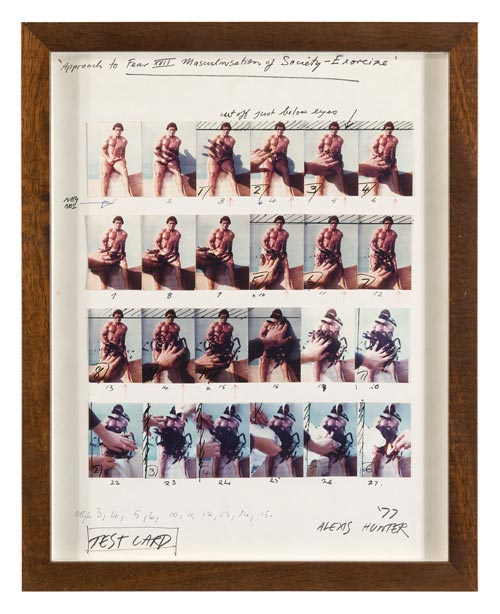
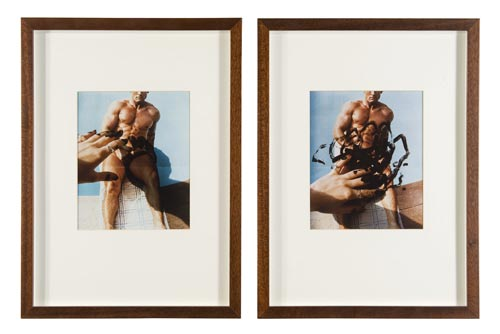

پذيرش > تریبون > مقالات > هنر واقعی به صدای آزادی تبدیل می شود
 مصاحبه ماری امیلی فورنیاکس با الکسیس هانتر ،هنرمند فمینیست مصاحبه ماری امیلی فورنیاکس با الکسیس هانتر ،هنرمند فمینیست

 هنر واقعی به صدای آزادی تبدیل می شود هنر واقعی به صدای آزادی تبدیل می شود
24 اردیبهشت 1392 - ترجمه : رها عسکری زاده - نسخه قابل چاپ
الکسیس هانتر یکی از هنرمند های شناخته شده هنر فمینیستی است.جنبشی که درفاصله سال های 70-1960 آغاز شد .او یکی از فعال ترین هنرمندان این جنبش در انگلیس محسوب می شود. در مجموعه عکس هایش که معمولا به شکل روایت های دنباله دار آنها را ثبت کرده وی ابعاد مختلف تبعیض جنسی را با وارونه سازی نمادهای مشخص برای موضوع های شناخته شده به چالش میکشد: یک خالکوبی روی شانه یک زن، دست مانیکور شده ای که موتورهای پر از لجن را نوازش می کند و ...
او در مجموعه های اخیرش به موضوع معترضان پرداخته است ، زنان ایران یا "استاکیستها"*،که نامی برگرفته ازنام یک گروه از هنرمندان.او رهایی را همیشه هدف دوربینش قرار داده است ...
الکسیس هانتر در سال 1948 در نیوزلند به دنیا آمد.او از سال 1972 در لندن زندگی و فعالیت می کند.
مصاحبه با هنرمند و ماری امیلی فورنیاکس
مسیری که شما در هنر طی کرده اید، به طور خاص در هنرفمینیستی چیست؟
والدین من از استرالیا مهاجرت کرده و در تیتیرانجی ساکن شدند، در شهر زیبای Waitakere Ranges نزدیک آکلند در نیوزلند. هنرمندان زیادی از سراسر اروپا به خاطر نفوذ جنگ جهانی به کشورهایشان به آنجا آمده بودند . من و خواهر دوقلوی ام وقتی یازده ساله بودیم نمایشگاه نقاشی در آنجا برگزار کردیم. در مدرسه هنر، در رشته نقاشی تحصیل کردم و علاقه ام به به هم ریختن تاریخ هنر با مجموعه هایی از پرتره های مردان بود.خوب من با پیوستن به اتحاد هنرمندان بریتانیا در سال 1927 از لحاظ سیاسی هم با این مساله درگیر شدم.
در کارگاه آ یو ( کارگروه زنان در اتحاد هنرمندان) بحثی در رابطه با ایده تئوری فمینیستی در گرفت و ما تصمیم گرفتیم در سال 1970 نمایشگاهی با موضوع هنر فمینیستی برگزار کنیم.
هدف شما از مجموعه عکس هایی که در دهه هفتاد انجام دادید چه بود ؟ مثلا مجموعه ابژه ؟
مجوعه ابژه در امتداد پرتره هایی از مردان بود که من در مدرسه هنر انجام داده بودم.اما این کار تا سال 1973 تبدیل به مجموعه عکاسی مستند الهام گرفته از تئوری جدید فمینیستی در فیلم شد. این پروژه منجر به یک نقاشی بسیار بزرگ در سبک عکس- واقعیت شد که امروز در موزه شهر آکلند است. هنر و انقلاب فمینیستی (اثر کانی باتلر) اولین نمایشش را در موزه هنر مدرن لس انجلس داشت.من علاقمند بودم ببینم که کار ما در رسانه های متفاوت با قدرتهای نمایش متفاوت چطور به نظر میرسد. "مجموعه ابژه " تحقیقی است در ارتباط با نگاه جنسیتی تماشاگر زن و مرد به یک مدل. داستانی که پشت سومین مجموعه عکس است اینطور پیش می رود : وقتی من در نیویورک بودم مردی را دیدم که زیر نور آفتاب در برادوی غربی لم داده بود. می خواستم از او عکس بگیرم و در فکر بودم که چطور به او نزدیک شوم.بعدازظهر همان روز یک دوست از من خواهش کرد که اگر دوست دارم با سوهو جواهرساز، الکس استریتر آشنا بشوم... و این مرد همان مرد بود! من در پشت بامی در نیویورک در حالی که مرکز تجارت جهانی پشت سرش دیده می شد ژستی به الکس دادم.نماینده مردانه کاپیتالیسم آمریکایی.
در مجموعه "انتقام مدل ها" مدل برهنه است.ریچارد سالتر ، صاحب گالری تو به من گفت با اینکه این عکس ها در ارتباط با انتقام در برابر کالاسازی زنان در جایگاه مدل گرفته شده اما حتی این عکسها هم برای مردان جذابیتی کمتر از قبل ندارند.او می گفت که تو هم نسبت به ضد و نقیض بودن ماجرا آگاه بودی.می توانی این موضوع را شرح دهی؟
من می خواستم از ترکیبی از فریبندگی عکاسی وسبک شجاعانه یک گزارش استفاده کنم تا میان نمایش دادن یک مدل همراه با خشمش از اینکه همیشه مورد نمایش قرار می گیرد کششی ایجاد کنم. یک نویسنده به نام " جان برگر" در سال 1973 مقاله ای ارائه داد در ارتباط با روانشناسی باطنی زنان از اینکه همیشه در معرض تماشا قرار می گیرند به نام " راه دیدن" . برانگیختن شور عمدی است- نگاه، اول به برهنگی جذب می شود.سپس متنی در ارتباط با خشونت خوانده می شود که با هفت تیر نشانه پردازی شده و به سمت شرم ناشی از نگاه کردن هدایت می شود ، یا پس زدن مصرف.خوب این هیجان نگاه کردن و احساس برانگیختگی فکری ، راهیست که ما تصویرها را مصرف می کنیم.
والی اکسپورت ،یکی دیگر از هنرمندهای فمینیست اتریشی به یادم آمد.در سال 1969 پرفورمنسی اجرا کرد به نام :هراس تناسلی. هنرمند میان تماشاگران یک سالن تئاتر پورنوگرافی راه می رفت.شلوارش در قسمت خشتک بریده شده بود و آلت تناسلی اش دیده می شد، در دستهایش تفنگی داشت.اگر اشتباه نکنم، تو به تازگی او را کشف کرده ای، که بسیار غیرمنتظره است.چرا اینطور است؟
من به تازگی عکسهای پرفورمنسی که تو اشاره کردی را در مجموعه کاتالوگ DONNA Sammlung Verbund (Vienna)دیدم.گرچه از فیلم قبلی او با خبر بودم.در نمایشگاه “WACK!” و بسیار هیجان زده بودم که کارهای زیادی از هنرمندان فمینیست اروپایی می بینم که همزمان با جنبش انگلیسی دهه 70 انجام شده بود، اما ما هیچ دسترسی به آنها نداشته ایم. در آن زمان تنها فیلم هایی از فمینیست های فرانسوی در فستیوال فیلم لندن نمایش داده شده بود.من فکر می کنم به علت استفاده از زبان انگلیسی ، هنرمندان امریکایی بیشتر فرصت کردند در بازار هنر کار ارائه کنند و بیشتر دیده شدند، مانند جودی شیکاگو. جنبش هنر فمینیستی به صورت حقیقی یک جنبش بین المللی بود و بیشتر کارهایی که در آن دوران انجام شد بعدها توسط محققان و نویسندگان کشف نشد. این برای گالری هایی مانند ریچارد سالتون بسیار سازنده است که این کارها را در نمایشگاه هایی چون نمایشگاه بین المللی آرت فیر نمایش دهد. مردم می توانند این روال سیاسی تاریخی هنر را از لحظه اول بیینند و متعجب شوند که چه مجموعه هایی در آرشیو نسل من وجود دارد.
موضوع مجموعه " نزدیکی به ترس" چیست؟ به نظر می آید که تو مجموعه های کوچک عکاسی ای خلق کرده ای که آنها با توجه به عنوان هایشان در گروه بندی های مختلف قرار گرفته اند.

این سری ، مجموعه ای است از پنج روایت تصویری دنباله دار ،که شامل مجموعه تصاویر پنج تایی تا 120 تایی از یک سکانس می شود به همراه سی اثر هنری که در فاصله سالهای 1976 تا 1981 ساخته شده اند.. همهی آنها برای دنبال کردن ترس از فمینیسم،ترس از تغییر در جامعه و فرد(هم در زنان هم مردان) توسط انقلاب فمینیستی است. این عکسها پوپولیستی هستند، زیبایی شناسی گرفته شده از مجلات گلاسه و تبلیغات تلویزیونی.

آنها پرفورمنسهایی تشریفاتی هستند که مستند شده اند، مانند ورد جادوگری
عکسهایی که به تازگی گرفته ای به نظر می آید نوعی مستندسازی است اما واقعیت این است که آنها بسیار ساختگی هستند. پروژه فعلی تو چیست؟
بیشتر عکسهای اخیر من از تظاهرات خیابانی در لندن، زنان ایرانی که با بنیادگرایان پدرسالار مبارزه می کنند و تجمع گروهی از نقاشان رادیکال به نام " استاکیست" مقابل تیت گالری است. من معمولا می دانم از عکس هایم چه می خواهم و می توانم ساعت ها در هوای سرد متنظر اتفاق افتادن ترکیب ذاتی یک جنبش در تضاد با ساختارهای رسمی بایستم.من معترضان را در یک تصویر قرار دادم و به آنها گفتم هیچ ژستی نگیرند.باد وزید، ابرها روی خورشید را گرفتند و باران روی معترضان استاکیست که مثل دلقک ها لباس پوشیده بودند بارید، و بعد من عکسم را داشتم. همان طور که می بینی این برای من و معترضان بسیار مشکل بود.آنها هنرمند هستند و می دانند که این عکس منحصر به فرد برای من اهمیت دارد.
تو نقاشی هم می کشی.می توانی کمی هم درباره نقاشی هایت هم بگویی؟
در نقاشی من بیشتر مایلم که درطول زمان روی یک ایده اصلی کار کنم. مثلا در مجموعه تضاد کوپید(افسانه یونانی) من از سمبلهای حیوانی قرون وسطی به استعاره از تضادهای روانی در دنیای مدرن استفاده کردم. موضوع جنگ است ، آب و هوا و اقتصاد تغییر می کنند. پرنده های شکاری بزرگ بر فراز شهرها، چیمرا(جانوری که سر شیر، بدن ببر و دم مار داشته است) اژدها ها در برکه های سوخته و ... تجسم تصویری این چیزهاست.من به تازگی مجموعه ای از چشم انداز های فرانسوی درباره جنگ جهانی اول را آغاز کرده ام. تاثیری که بر نقاشی آرتمیسیا گنتایلسچی، کوربت، ون گوگ ،مانت، مونه و گاوگویین داشته است. من روش های استادانه قدیمی و ارزش به دست آوردن احساسات در تکنیک را مطالعه کردم.اگر نقاشی من برچسبی داشت این بود : نمادگرای اکسپرسیونیست". نقاشی هنوز موضوع محور است، اما من می دانم که امشخصه های ابزار رسانهای در اولویت اول است، بنابراین مفاهیم مبهم تر از مجموعه های عکاسی است.
آیا فکر می کنی جنبش فمینیستی در این روزها همانقدر که باید پویایی دارد؟
من ناامید شده بودم که فمینیست فقط یک بار در تاریخ رخ داده و گذشته است اما حالا نسل جدید فمینیست ها را داریم که خیابان ها را به دست میگیرند و تظاهرات خیابانی مانند جنبش "بازپس گیری شب" ( گروهی از فمینیست ها که علیه خشونت جنسی و برابری جنسیتی مبارزه می کنند) را به راه میاندازند. موج سوم ، همان طور که نامیده می شوند، به کمک اینترنت بیش از قبل بین المللی است.مردم به صورت عمومی باسواد تر هستند و زبان های دیگر را یاد گرفته اند و این به ما کمک می کند تا کنار یکدیگر به صورت جهانی کار کنیم.
آیا زنان هنرمند برای حفظ یا ارتقاء جایگاهشان در دنیای هنر تقلای بیشتری می کنند؟
مشکل این است که معتمدان موزه ها معمولا مردها هستند و آنها مجموعه های مردان را جمع آوری می کنند. حتی زنهایی هم که در این بازار کار می کنند هنری را تولید می کنند که مردان مجموعه دار می خواهند.اینهم یک بازار است مانند باقی بازارها. اما حالا ، زنان جوان مجموعه دار ثروتمند خواستار هنر زنانی هستند که می توانند با آن هویت کسب کنند. مجموعه دار ها متوجه تاثیر بسیار بزرگی که جنبش هنر فمینیستی بر هنر معاصر سی سال اخیر گذاشته است شدند و ناگهان میزان علاقمندی بالاتر رفت. بسیاری از کارهای ارزشمند یا گمشده اند و یا از بین رفته اند، بنابراین نادر بودن این آثار به ارزش آنها افزوده است.
آیا فکر می کنی زنان هنرمند در کشورهایی که حقوق زنانی وجود ندارد می توانند ردپای تو در چهل سال گذشته را دنبال کنند؟ آیا هنر می تواند دنیا را تغییر دهد؟
چیزی که اهمیت دارد این است که هنرمندان دریافت خود از آزادی را به روش خودشان بیان کنند. گاهی یک هنرمند با بیان یک موقعیت پیچیده با تصاویری خالص و ساده می توانند کمک کند یک جنبش شناخته شده تر شود.هنر یک رسانه گویاست، و اگر برای نمایش دادن ارزش های یک رژیم واپسگرا استفاده شود، فلج و بی جان می شود. برای همین است که رژیم های دیکتاتوری همیشه شعر و ادبیات را از بین می برند و نمایش کارهای هنرمندان معاصر را ممنوع می کنند. به طور قطع، هنر واقعی به صدای آزادی تبدیل می شود.
زنان هنرمند نقش بزرگی در هنر پرفورمنس با به تصویر کشیدن خودشان به عهده داشته اند... آیا با این موضوع موافقی و کدام یک از هنرمندان این روزها نظر تورا جلب کرده است؟
دلیل اینکه چرا بسیاری از هنرمندان فمینیست از بدن خودشان برای کارهای هنری استفاده می کنند این بود که متوجه شدند استفاده از بدن زن دیگری به عنوان مدل، بعد از اینهمه استفاده از مدل ها در تاریخ هنر،تبلیغات و پورنوگرافی استثماری است که قبل از درک تبعیض جنسیتی اتفاق افتاده است.بنابراین مهم نیست که چه کسی شاتر دوربین را فشار دهد- اگر یک مدل برهنه می خواهی باید برای هنر خودت برهنه شوی. کارهای جو اسپنس دوباره مورد توجه واقع شده است . او کسی از طبقه ی کارگر و یک عکاس تجاری بود که با امکانات فنی خوب و شور زیاد به سراغ موضوع «مشاهده» رفت و این کار را با استفاده از بدن خودش انجام داد. من همچنین به کارهای الکس برو ،عکاس جوان احترام می گذارم. در مجوعه " آن را طلب کن" او قراردادی با یک مرد که بیرون یک استریپ کلاب پیدا کرده بود بست تا برای دوربین او برهنه شود تا بحث مشاهده جنسیتی را به پیش بکشد. خطرات برخورد اتفاقی جنسیتی، نگاه هیز بیننده ، چه به عنوان مشتری یک استریپ کلاب ، عکاس زن ، یا ما ، که در یک گالری به مردهای شرم زده ای که زیرپوش و شورتشان را در می آورند نگاه می کنیم. این کار الکس ادامه معاصر مجموعه من : " گزارش سری: بله، نه ، شاید " است که مستندی است در ارتباط با مواجهه با لاس زدن با غریبه ها در خیابان. این کار در سال 1973 آغاز شده بود. در نتیجه من فکر می کنم هنر فمینیستی یکی از قدرتمند ترین جنبش های تئوریک در هنر معاصر است که هنوز خوب کشف نشده است.
ارسال به
بالاترین
،
توییتر
،
فریندفید
،
فیسبوک
در همين بخش :
 دهمین دورۀ مراسم تندیس صدیقه دولت آبادی ۱۳۹۲ دهمین دورۀ مراسم تندیس صدیقه دولت آبادی ۱۳۹۲
کارت پستالهایی به بهانهی هشت مارس و به یاد همهی مبارزین راه برابری
بیانیه بیش از 350 تن از مدافعان حقوق زنان به مناسبت روز جهانی زن؛ زنان هر روز فرودستتر میشوند
لباسی که برای تن ما دوخته اند! /اعظم بهرامی
چالشها و چشمانداز فعالیت مدنی زنان
ديگر بخش ها :
طرح یک میلیون امضا
|
مقالات
|
سایت نوشته ها
|
اخبار
|
گزارش كمپين
|
گفت و گو
|
علیه سکوت
|
كوچه به كوچه
|
نامه های شما
|
گزارش ویژه
|
گفتگو با اعضا
|
ویژه سالگرد کمپین
|
تصویر برابری
|
دل آرام علی
|
تریبون
|
مقالات
|
تاریخ شفاهی
|
خارج از چارچوب
|
کتابخانه
|
درباره کمپین
|
کمپین در شهرها
|
کمپین در بند
|
صدای تغییر
|
ویژه 22 خرداد
|
لایحه حمایت از خانواده
|
گالری
|
عشا مومنی
|
امیر یعقوبعلی
|
خدیجه مقدم
|
راحله عسگری زاده و نسیم خسروی
|
پروین اردلان،جلوه جواهری، مریم حسین خواه، ناهید کشاورز
|
زینب پیغمبرزاده
|
سعیده امین، سارا ایمانیان، محبوبه حسین زاده، ناهید کشاورز و همایون نامی
|
احترام شادفر
|
نسیم سرابندی زاده،فاطمه دهدشتی
|
وبلاگ مهمان
|
پرونده خرم آباد
|
دستگیری ها
|
مریم مالک
|
پرستو اللهیاری
|
مهرنوش اعتمادی
|
سمیه رشیدی
|
Other Languages
|
همراهان
|
«فراخوان کمپین ده روز با بهاره هدایت»
| English
|